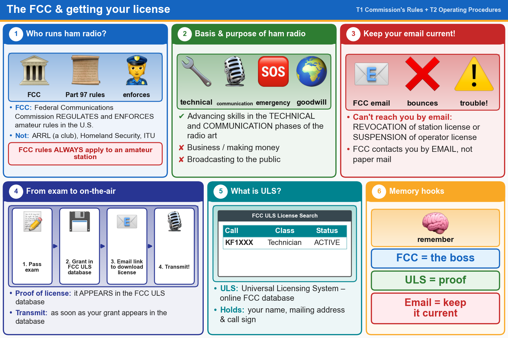

💡 The FCC makes and enforces the rules. Your license is official once it shows in the FCC ULS database.
Pick an answer for each question, then press Grade at the bottom.
T1A01[97.1]
Which of the following is part of the Basis and Purpose of the Amateur Radio Service?
✘A.Providing communications for international contesting
✘B.Providing personal radio communications for as many citizens as possible
✔C.Advancing skills in the technical and communication phases of the radio art
✘D.All these choices are correct
T1A02[97.1]
Which agency regulates and enforces the rules for the Amateur Radio Service in the United States?
✔A.The FCC
✘B.ARRL
✘C.Homeland Security
✘D.All these choices are correct
T2C01[97.103(a)]
When do the FCC Part 97 Amateur Radio Service rules NOT apply to the operation of an amateur station?
✘A.When operating under RACES rules
✔B.FCC rules always apply
✘C.When operating under FEMA rules
✘D.When operating under ARES rules
T1A04[97.23]
How do you receive official notification of your new license and call sign after passing the exam?
✔A.Email from the FCC with a link to download the license grant
✘B.USPS First-Class Mail from the lead volunteer examiner
✘C.Email from the lead volunteer examiner
✘D.USPS First-Class Mail from the FCC
T1A05[97.7]
What proves that the FCC has issued an operator/primary license grant?
✘A.A printed copy of the certificate of successful completion of examination
✘B.An email notification from the NCVEC granting the license
✔C.The license appears in the FCC ULS database
✘D.All these choices are correct
T1C10[97.5a]
How soon after passing the examination for your first amateur radio license may you transmit on the amateur radio bands?
✘A.Immediately on receiving your Certificate of Successful Completion of Examination (CSCE)
✘B.As soon as your operator/station license grant appears on the ARRL website
✘C.As soon as you receive your license in the mail from the FCC
✔D.As soon as your operator/station license grant appears in the FCC’s license database
T1C04[97.23]
What may happen if the FCC is unable to reach you by email?
✘A.Revocation of access to the license record in the FCC system
✔B.Revocation of the station license or suspension of the operator license
✘C.Nothing; there is no such requirement
✘D.Fine and suspension of operator license